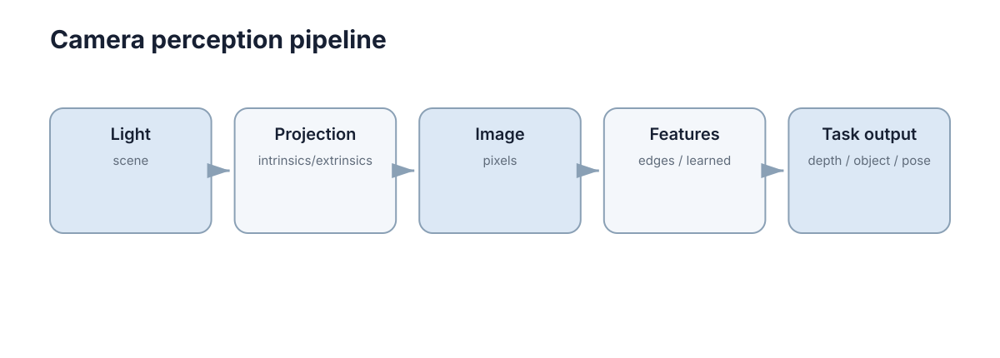

Image & Camera Basics
视觉算法最终处理的是像素，但像素来自真实三维世界经过相机成像后的投影。一个世界坐标系中的三维点，要依次经过外参刚体变换、透视除法与内参缩放三次变换才落到像素坐标上；视觉系统里大多数“看起来像算法 bug”的几何错误，都能追溯到这条链路中的某一个环节。
本章按“像素是什么 → 三维点如何变成像素 → 内参和外参各负责什么 → 如何标定与验证 → 成像质量在什么情况下毁掉几何”的顺序展开，为后续的特征匹配、深度估计与多模态融合打底。所有讨论都围绕同一个目标：让图像上的一个坐标可以被解释为真实空间中的一条射线。

数字图像首先是规则采样的数值阵列
灰度图可以写成 \(I(u,v)\)，其中 \(u\) 是列索引、\(v\) 是行索引，原点通常取左上角；彩色图在每个像素保存三个通道，工程中最常见的是 RGB，而传感器原生的 Bayer 阵列则只有一个通道加颜色滤波。分辨率的含义只是“采样点有多少”，它既不等于几何精度，也不等于信息量。
围绕一次采样，至少有以下几件事同时发生：
- 量化：8 bit 把亮度离散成 \(0\ldots255\) 共 256 级，单级约对应满量程的 0.4%；
- 动态范围：可记录的最亮与最暗之比，常用分贝表示 \(20\log_{10}(S_{\max}/S_{\min})\)，普通 CMOS 约 60–70 dB，HDR 模式可到 100 dB 以上；
- 曝光时间：单帧的积分时长，直接决定运动模糊；
- 增益与 ISO：把模拟电压放大，亮度提升的同时噪声也被同比放大；
- 颜色空间：sRGB 带非线性 gamma，而多数模型在归一化线性空间上训练，互换会改变像素语义；
- 采样极限：要区分空间周期为 \(\Delta\) 的纹理，像素投影尺度 \(p\) 需满足 \(p\le\Delta/2\)，否则发生混叠（aliasing）。
| 图像属性 | 物理含义 | 对算法的典型影响 |
|---|---|---|
| 分辨率 | 采样点数量 | 决定微小目标是否有足够像素 |
| 位深 | 亮度量化级数 | 影响弱对比度边缘能否分离 |
| 曝光时间 | 单帧积分时长 | 决定运动模糊与噪声水平 |
| 增益 / ISO | 模拟与数字放大 | 提亮同时放大噪声 |
| 颜色空间 | 通道顺序与 gamma 约定 | 影响模型输入语义一致性 |
| 帧率 | 每秒输出帧数 | 决定可观测的最大运动速度 |
视觉算法因此既受几何关系影响，也受成像质量影响。二者要分开诊断：拍同一场景换算法仍错，先查几何；换阈值能缓解但换场景又错，先查成像。
针孔模型描述最基本的透视投影
设相机坐标系中的三维点为 \((X,Y,Z)\)，焦距为 \(f\)，理想投影满足
同一个物体离相机越远，\(Z\) 越大，投影尺寸越小。这就是透视关系的来源。写成比例形式会看得更清楚：
分子与分母同时缩放不改变结果，这就是单目的尺度歧义：仅凭一张图像无法恢复绝对距离，除非引入已知尺寸、额外帧间的运动基线，或者第二种传感器。
视场角由焦距与像面尺寸共同决定，水平视场可近似写作 \(2\arctan\!\left(\frac{w}{2f_x}\right)\)。\(f_x\) 增大则视场变窄、远处目标占据的像素更多；这解释了为什么长焦镜头“拍得清但看得窄”，而广角镜头视野大却让每个目标只有几十个像素。
实际像素还需要考虑主点和不同方向的像素尺度：
\(K\) 就是相机内参矩阵。\(f_x,f_y\) 的单位是像素，\(c_x,c_y\) 是主点在像素坐标中的位置；前三项共同决定了“归一化平面上的一个方向”落在图像的哪个坐标上。
内参和外参解决的是两类完全不同的问题
内参描述相机自身的成像几何，外参描述相机相对机器人或世界坐标系的位置与姿态；两者的单位、标定方式和出错后果都不一样。
内参描述相机自身成像几何：焦距、主点、畸变等；外参描述相机相对机器人或世界坐标系的位置和姿态。
| 对比项 | 内参 | 外参 |
|---|---|---|
| 描述对象 | 相机内部成像几何 | 相机相对外部坐标系的位置姿态 |
| 典型参数 | \(f_x,f_y,c_x,c_y\) 与畸变系数 | 旋转 \(R\) 与平移 \(t\) |
| 自由度 | 4（不含畸变与 skew） | 6（3 旋转 + 3 平移） |
| 单位 | 像素 | 旋转无量纲，平移为米 |
| 典型标定方式 | 棋盘格、圆点靶、已知运动 | 手眼标定、已知靶标、CAD 模型 |
| 失效后果 | 像素定位整体缩放或偏移 | 检测正确但空间位置与方向错误 |
| 变化频率 | 一般较低 | 拆装、碰撞后随时可能改变 |
即使目标在图像中检测得非常准，如果外参错误，转换到机器人坐标系后仍会落在错误位置。机器人视觉里，“检测正确但导航方向不对”经常是外参或 TF 问题。
量级上有两个直观例子可以区分两类错误：主点 \(c_x\) 偏 20 px，会让整幅图像的像素定位发生平移，但相对位置关系不变；而平移外参 \(t_z\) 偏 5 cm，在 3 m 距离上就对应约 \(0.95°\) 的角误差，直接改变障碍物在机器人坐标系中的方位。前者通常“还能用”，后者通常直接导致决策错误。
两类参数的验证方式也不一样：
- 内参可以离线独立校验：把已知尺寸的靶标放在多个距离上，检查投影尺度是否符合 \(h_{px}=f_y h/Z\)；
- 外参必须与运动或场景联合校验：让机器人绕自身轴旋转，若图像中的静态目标保持不动而机器人坐标系里的位置却在晃动，问题几乎一定出在外参或时间戳；
- 畸变系数要与内参一起看待：只改 \(k_1\) 而不重新拟合 \(f_x,f_y\)，会让中心与边缘的尺度互相矛盾。
外参还会随机械应力、温度与装配负载缓慢漂移，因此例行自检应把外参与温度、负载一起记录成时间序列，让漂移趋势在造成误判之前就被观察到。
畸变会让理想针孔模型偏离真实镜头
广角镜头尤其明显：直线靠近图像边缘会弯曲。把归一化平面上的理想点记为 \((x,y)\)，\(r^2=x^2+y^2\)，Brown-Conrady 模型把实际观测点写作
其中 \(k_1,k_2,k_3\) 是径向系数，\(p_1,p_2\) 是切向系数。注意 \((x_d,y_d)\) 是观测，去畸变要的是它的逆映射，而逆映射通常没有闭式解，只能用迭代或查找表。
| 畸变类型 | 主要成因 | 视觉表现 | 常见处理 |
|---|---|---|---|
| 桶形径向（\(k_1<0\)） | 广角、短焦镜头 | 直线向外凸 | 逆映射重采样 |
| 枕形径向（\(k_1>0\)） | 长焦镜头 | 直线向内凹 | 逆映射重采样 |
| 切向 | 镜片与像面不平行 | 局部剪切与偏移 | 切向系数补偿 |
| 高阶径向 | 大畸变镜头 | 边缘出现波纹 | 引入 \(k_3\) |
| 鱼眼 | 超广角设计 | 投影模型本身不同 | 使用等距/等积模型 |
标定过程通常同时估计内参和畸变参数，再把原图校正到更接近针孔模型的坐标。去畸变会重新采样像素，边缘区域可能出现空像素，因此校正后必须重新核对有效视场和各向尺寸是否仍然匹配。 如果下游直接把去畸变图像当成“标准针孔图像”使用，却仍沿用未校正的宽度做归一化，就会得到整体偏小或偏大的框。
标定不是“只做一次就永远正确”。镜头重新安装、焦距改变或机械结构变形后，参数可能需要重新估计。
像素投影实现
def project_point(X, Y, Z, fx, fy, cx, cy):
if Z <= 0:
raise ValueError("point is behind camera")
u = fx * X / Z + cx
v = fy * Y / Z + cy
return u, v
这段代码没有畸变、没有外参，但已经体现了投影最核心的 \(X/Z\)、\(Y/Z\) 关系。函数开头对 \(Z\le0\) 的检查同样重要：位于相机后方或正好在光心平面上的点，投影结果是数学上没有意义的，把它当成巨大坐标传给下游会造成极难定位的错误。
图像读取与预处理接口
进入模型前应显式固定颜色空间、尺寸和数值范围：
import cv2
image = cv2.imread("frame.png")
if image is None:
raise FileNotFoundError("frame.png")
rgb = cv2.cvtColor(image, cv2.COLOR_BGR2RGB)
tensor_input = cv2.resize(rgb, (640, 384)).astype("float32") / 255.0
预处理参数必须与训练阶段一致；“模型能运行”不代表输入语义正确。缩放比例本身也是几何信息：若推理时把 1280 宽缩到 640，检测框坐标必须乘 2 才能回到原图，这个因子最好写成显式的配置，而不是散落在各处的魔数。
视觉坐标约定
不同库对相机轴方向、图像原点和旋转表示可能不同。工程中必须明确：\(+Z\) 是否朝前、像素原点在哪里、外参是 world-to-camera 还是 camera-to-world。很多“公式差一个负号”的问题，本质是坐标约定没写清。
以三个最常见的体系为例：OpenCV 相机系为 \(x\) 向右、\(y\) 向下、\(z\) 向前；ROS 的 optical frame 同样以 \(z\) 为光轴、\(x\) 向右、\(y\) 向下；而机器人常用的 base 或 map 系则通常取 \(z\) 向上、\(x\) 向前。图像坐标本身也有约定：\(u\) 沿列方向（向右增大），\(v\) 沿行方向（向下增大），原点在左上角。
| 约定项 | 常见可选 | 不写清的后果 |
|---|---|---|
| 光轴方向 | \(+Z\) 朝前或朝后 | 深度符号整体反号 |
| \(v\) 轴方向 | 向下或向上 | 图像上下镜像 |
| 外参方向 | world-to-camera 或 camera-to-world | 姿态漂移而非固定偏置 |
| 旋转表示 | 矩阵、四元数、欧拉角 | 插值与顺序歧义 |
| 单位 | 米、毫米、像素 | 投影尺度放大 1000 倍 |
| 像素中心 | 整数坐标或像素中心加 0.5 | 亚像素级系统性偏移 |
符号错误造成的偏差可以直接估算：若 \(v\) 的符号被弄反，投影点会绕图像中心镜像，在 \(c_y=540\) 的图像上，一个真实位于 \(v=700\) 的点会被算成 380，偏差 \(2(v-c_y)=320\) px。这类错误在单帧可视化里常常“看起来还行”（因为整体仍是合理图像），只有把投影结果叠加到原图上才会暴露。
工程上有效的做法是把约定写进接口：每个涉及位姿的函数都显式声明输入输出的坐标系名称与旋转表示，让“差一个负号”的错误在类型或字段层面就无法悄悄发生。命名比注释更可靠——T_world_camera 这种量纲化的命名方式，本身就排除了方向歧义。
另一个高频陷阱是旋转的复合顺序。\(T_1T_2\) 与 \(T_2T_1\) 只在特殊情况下相等，因此链式变换必须固定约定：是从世界到相机的顺序依次右乘，还是相机到世界的顺序依次左乘。在标定、仿真与实机三处使用不同顺序，会让外参在任何单一模块里都“看起来正确”。
时间戳与坐标约定属于同一类问题：图像时间戳若是采集时刻而位姿是曝光结束时刻，在 \(2\) m/s 的机器人上就会带来毫米到厘米级的错位，而这种偏差在静止标定中完全不可见。因此坐标、单位、旋转表示、时间基准这四项应当被一起写进模块的接口契约。
分辨率与可辨识尺度
更高分辨率只增加采样点，不会自动消除模糊、噪声或错误标定。一个目标是否可识别取决于它在图像中占据的像素数量、对比度和成像质量。选择相机和输入尺寸时，应从任务所需的最小目标尺度反推，而不是只比较总像素数。
这个反推关系是线性的。物理高度为 \(h\) 的目标在距离 \(Z\) 处占据的像素高度为
若要求 \(h_{px}\ge 32\) px 才可稳定检测，则检测 0.1 m 的物体在 20 m 处需要 \(f_y\ge 32\times20/0.1=6400\) px 的垂直解析度；而同样目标在 2 m 处只需 640 px。这就是“同一个相机在不同距离上表现判若两机”的原因，也是安全场景必须按距离分层报告指标的原因。
| 任务 | 目标最小像素尺度 | 说明 |
|---|---|---|
| 图像级分类 | 整图 | 与目标尺寸无关 |
| 通用目标检测 | 约 32 px 高 | 小目标需专门的特征层或切片推理 |
| 关键点与位姿 | 约 10 px 特征尺度 | 亚像素定位更敏感于模糊 |
| 实例分割边界 | 约 2–3 px 边界带 | 边界误差直接压低 Dice |
| 文字识别 | 约 16 px 字高 | 低于此准确率急剧下降 |
需要注意的是，缩小输入尺寸等价于降低有效的 \(f_y\) 与 \(f_x\)：把 1920 宽缩到 640，等效焦距变为原来的三分之一，可辨识尺度随之放大三倍。因此“为了降延迟而缩小输入”直接改变了系统的物理量程，必须在选型阶段就用上面的公式核算，而不是等到小目标召回掉光之后才发现。
内参矩阵与投影链路
把世界点写作齐次坐标 \(\mathbf X=(X,Y,Z,1)^\top\)，完整链路可以压缩成一个式子：
展开后每个像素坐标都表现为两个线性的分子除以同一个分母：
其中 \(r_i^\top\) 是旋转矩阵的第 \(i\) 行。分母相同是透视投影的定义性特征；它既带来“近大远小”，也带来“同一个像素对应空间中的一条射线”这一不可逆性。
| 符号 | 含义 | 单位 | 所在坐标系 |
|---|---|---|---|
| \(X,Y,Z\) | 世界点坐标 | 米 | world |
| \(R\) | 旋转矩阵 | 无量纲 | world → camera |
| \(t\) | 平移向量 | 米 | world → camera |
| \(X_c,Y_c,Z_c\) | 相机坐标系中的点 | 米 | camera |
| \(x,y\) | 归一化平面坐标 | 无量纲 | normalized plane |
| \(f_x,f_y\) | 焦距的像素尺度 | 像素 | 图像 |
| \(c_x,c_y\) | 主点像素位置 | 像素 | 图像 |
| \(u,v\) | 像素坐标（列、行） | 像素 | 图像 |
链路里任何一项的单位错位都会让投影整体偏移：把以毫米表示的 \(t\) 直接与以米表示的 \(Z\) 混用，误差会放大 1000 倍；把 world-to-camera 与 camera-to-world 弄反，则相当于对同一物体先转 \(R\) 再转 \(R^{-1}\)，结果会随姿态漂移而不是固定偏置。
import numpy as np
def world_to_pixel(X_w, K, R, t, dist=None):
X_c = R @ X_w + t
if X_c[2] <= 0:
raise ValueError("point behind camera")
x = X_c[:2] / X_c[2]
if dist is not None:
k1, k2, p1, p2 = dist
r2 = float(x @ x)
radial = 1.0 + k1 * r2 + k2 * r2 * r2
x = x * radial + np.array([
p1 * 2 * x[0] * x[1] + p2 * (r2 + 2 * x[0] ** 2),
p1 * (r2 + 2 * x[1] ** 2) + 2 * p2 * x[0] * x[1],
])
uv = K @ np.array([x[0], x[1], 1.0])
return uv[:2] / uv[2]
正向链路是唯一的，反向链路不是：已知 \(Z\) 时可以由像素反投影出唯一的相机坐标系点，已知 \(u,v\) 而不知 \(Z\) 时只能得到一条射线。这正是 ./04-depth-point-cloud.md 要处理的问题。
标定流程与重投影误差
标准棋盘格标定（Zhang 方法）的流程可以拆成六步，每一步都有容易忽略的约束：
- 打印已知格数与大格尺寸的靶标，例如 9×6 格、方格边长 25 mm，并测量实际打印尺寸而不是相信标称值；
- 固定相机与镜头，锁定对焦环与光圈——自动对焦和变焦会在拍摄过程中改变内参；
- 采集 15–30 张不同位姿图像，靶面覆盖图像的四个角与中心，倾斜角在 30°–45° 之间；
- 亚像素提取角点，剔除局部模糊或反光的视角；
- 先用线性方法求内参初值，再用非线性最小二乘联合优化内参与畸变系数；
- 用重投影误差评估，不达标就剔除低质量视角重新标定。
重投影误差定义为把靶标点按估计参数投影回图像后与观测点的均方根偏差：
单位是像素。它衡量的是标定参数在训练视角内的自洽程度，因此必须在独立视角上再做一次校验，否则容易过拟合到那几十张图。
| 重投影误差 | 结论 | 常见原因 |
|---|---|---|
| 小于 0.3 px | 优秀 | 角点提取正常，位姿覆盖充分 |
| 0.3–0.8 px | 可接受 | 轻微噪声或少量视角不佳 |
| 0.8–1.5 px | 需要复核 | 靶面覆盖不足、模糊、畸变模型不足 |
| 大于 1.5 px | 不可用 | 位姿过于单一、角点错配、参数估计发散 |
需要重新标定的典型情况包括：镜头被碰撞或拆装、对焦环被转动、变焦镜头改变焦距、分辨率或 ROI 与 binning 改变（内参以像素为单位，采样尺度随之变化）、温度大幅波动引起镜座热胀冷缩、以及更换同型号替代件后没有复核。工程上最可靠的做法不是“相信一次标定”，而是把重投影误差和一条已知长度的几何校验线放进例行自检，让参数漂移在造成事故前暴露出来。
视觉常见失效模式
排查顺序永远是先看数据、再看算法。多数“模型不准”其实是采集阶段已经丢失了信息，此时调阈值只能掩盖症状。 下表给出典型失效模式与快速判据。
| 现象 | 成因 | 排查手段 |
|---|---|---|
| 过曝（高光削顶） | 曝光过高、镜面反射 | 观察直方图右侧堆积，启用自动曝光或 HDR 融合 |
| 欠曝（暗部噪声） | 曝光不足、逆光 | 观察直方图左侧堆积，提高曝光或主动补光 |
| 运动模糊 | 曝光期间目标或相机运动 | 估计模糊核长度，要求像面位移小于 1 px |
| 卷帘快门 | 逐行曝光，行间存在时间差 | 快速平移的竖直直线变斜，改用全局快门 |
| 镜头振辐（渐晕） | 边缘照度按 \(\cos^4\theta\) 衰减 | 检查四角亮度差，做平场校正或裁剪视场 |
| 强光与眩光 | 直射光源进入视场 | 加遮光罩、调整安装角、多曝光融合 |
运动模糊可以定量估算。曝光时间 \(\Delta t\) 内目标在像面上的位移约为
要求 \(\Delta u<1\) px 才不至于把边缘抹开。以 \(f_x=800\) px、\(Z=5\) m、横向速度 \(v_x=2\) m/s 为例，允许的曝光时间只有 \(3.1\) ms；白天室外常见快门常在 1–8 ms 之间，因此高速场景必须优先解决曝光而不是换模型。
卷帘快门（rolling shutter）逐行曝光，行与行之间存在时间差，整帧读出时间可达 20–40 ms。对 10 m/s 的快速旋转或平移，它会产生数个像素的几何倾斜，在 SLAM 中极易被误判成外参错误或时间戳不同步：静止时标定完全正常，一旦运动起来对极几何约束就系统性偏差。
镜头振辐（渐晕）使边缘照度按 \(\cos^4\theta\) 衰减，广角镜头四角可能比中心暗 40% 以上。它同时抬高边缘区域的噪声、压低描述子的稳定性和阈值分割的可靠性，因此“图像中心特征很稳、边缘频繁丢配”常常不是描述子问题，而是照度分布问题。
强光与眩光在像素层直接产生饱和与散射，直方图上表现为大片削顶。短曝光叠加可以保住高光信息，但会引入多帧对齐误差；如果下游依赖多帧一致性，还需要把对齐残差一并纳入置信度。
下一步：先掌握像素与三维点的对应关系，再进入 Feature-Based Vision 学习如何在不同图像之间建立稳定对应；随后 Depth, 3D Vision & Point Clouds 讨论如何把像素反投影成三维几何，机器人传感器仿真 则给出在仿真中复现这些成像误差的方法。